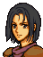
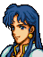
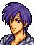
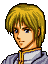
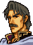

Retreat Quotes
Scenes (1)
リーフ — appears in Chapter 1
(→ Chapter 5 only)
フィン — appears in Chapter 1

リーフ様、先行します！Lord Leif, I'll go on ahead!
オーシン — appears in Chapter 1

へっ、たわいのねえ
楽勝だぜHeh, nothing to it. Easy win.
ハルヴァン — appears in Chapter 1
本当の戦いはこれからだ・・・The real fight starts now...
エーヴェル — appears in Chapter 1

リーフ様、先に行きます
無理をしてはいけませんよ・・・Lord Leif, I'll go ahead. You mustn't push yourself...
ダグダ — appears in Chapter 1

王子！
無理することはない！
早く脱出するんだ！Prince! There's no need to push it! Get out quickly!
マーティ — appears in Chapter 1

ふう・・・
やれやれ・・・Phew... good grief...
タニア — appears in Chapter 1

リーフ様！
なにグズグズしてんのさ！
先、行くよ！Lord Leif! What are you dawdling for! I'm going ahead!
ロナン — appears in Chapter 2
みんな、大丈夫かな・・・I wonder if everyone's all right...
サフィ — appears in Chapter 3

リーフ様に
神のご加護がありますように・・・May God's protection be with Lord Leif...
リフィス — appears in Chapter 3

へへへ・・・
あぶねえあぶねえ
じゃ、あとはよろしくHeh heh heh... That was close, that was close. Well, I leave the rest to you.
ラーラ — appears in Chapter 4
ごめんね、先に脱出するわ
無理しないでねSorry, I'm getting out first. Don't push yourself.
ブライトン — appears in Chapter 4
すまん、先に行かせてもらう！Sorry, I'll be going ahead!
フェルグス — appears in Chapter 4

ま、世の中なんとかなるもんだ
それじゃ、お先に！Well, things have a way of working out in this world. See you, I'm off first!
マチュア — appears in Chapter 4

ありがとう、先に行くわThank you. I'll go ahead.
カリン — appears in Chapter 4

ふう、一時はどうなることかと思ったわ
じゃあ、先に行くねPhew, for a while there I wondered what would happen. Well, I'm going ahead.
ダルシン — appears in Chapter 4

ディアナ、ユベル・・・
待っていろ
もうすぐ、もうすぐ帰るからな・・・Diana, Hubert... wait for me. I'll be home soon, very soon...
アスベル — appears in Chapter 4x

リーフ様
先に行って待ってます
お気をつけて！Lord Leif, I'll go ahead and wait for you. Take care!
ナンナ — appears in Chapter 5

リーフさま・・・
ご無事で・・・Lord Leif... stay safe...
(→ in Chapter 5)
ヒックス — appears in Chapter 6

マフィー・・・父はがんばっているぞ！Murphy... your father is doing his best!
シヴァ — appears in Chapter 7

・・・すまぬ・・・...Sorry...
カリオン — appears in Chapter 8

・・・ここは先に行きます
申しわけありません...I'll go ahead here. My apologies.
セルフィナ — appears in Chapter 9

リーフ様
これ以上長居は無用です
急いでください！Lord Leif, there's no point staying any longer. Please hurry!
ケイン — appears in Chapter 9
王子
先に行きます！
おん身、大切に！Prince, I'm going ahead! Take good care of yourself!
アルバ — appears in Chapter 9

よし、次だ次！All right, next, next!
ロベルト — appears in Chapter 9

次こそは・・・Next time for sure...
オルエン — appears in Chapter 11x

また、新たな戦いが始まるのね・・・So a new battle is beginning again...
フレッド — appears in Chapter 11x
ここはひとまず先に行きます！
ご無事で！I'll go ahead for now! Stay safe!
マリータ — appears in Chapter 12

母様・・・見ていて・・・必ず・・・Mother... watch me... I will, for sure...
セイラム — appears in Chapter 12x

こんなところで
倒れるわけにはいかない・・・I can't afford to fall in a place like this...
パーン — appears in Chapter 12x

すまねえな
先に行かせてもらうぜ
王子さんよ！Sorry about this. I'll be going ahead, Prince!
ティナ — appears in Chapter 12x

いっつもいっつも戦いばっかり
もう、やんなっちゃう！Always, always nothing but fighting. I'm so sick of it!
トルード — appears in Chapter 12x

・・・すまん、先に行く・・・...Sorry, I'm going ahead...
グレイド — appears in Chapter 13
ここはもう十分です
王子！ 先を急ぎましょう！This is enough here. Prince! Let's hurry on!
ディーン — appears in Chapter 14

・・・ここは先に行かせてもらう・・・...I'll be going ahead here...
エダ — appears in Chapter 14
次の戦いでは
もっともっと
お役に立って見せますね！In the next battle, I'll be much, much more useful, you'll see!
ホメロス — appears in Chapter 14

まったく、これじゃ
命がいくつあっても足りねえよ・・・Honestly, at this rate no number of lives would be enough...
リノアン — appears in Chapter 14x / 15

ターラの人々は大丈夫かしら・・・I wonder if the people of Tahra are all right...
ラルフ — appears in Chapter 15
ちっ
まだまだこれからってのに・・・Tch. And I was just getting started...
イリオス — appears in Chapter 16A
ちっ・・・
平民だと思ってこき使いやがって・・・
もう、やってられねえぜTch... Working me to the bone because they think I'm just a commoner... I can't take this anymore.
スルーフ — appears in Chapter 16A

リーフ王子、ブラギの御霊は
いつもあなたを見守っています
お心を強く！Prince Leif, the spirit of Bragi is always watching over you. Keep your heart strong!
ミーシャ — appears in Chapter 17A

ごめんなさい・・・
先に脱出します・・・I'm sorry... I'm escaping first...
シャナム — appears in Chapter 16B

フッ、こんなものか・・・Heh, so this is all there is to it...
サラ — appears in Chapter 16B / 17A

・・・・・・......
ミランダ — appears in Chapter 16B

やっと抜け出したのね・・・So we've finally gotten out...
ゼーベイア — appears in Chapter 18

先に行きます・・・I'll go ahead...
コノモール — appears in Chapter 19

すまん、リーフ王子
先に行く！Sorry, Prince Leif. I'm going ahead!
アマルダ — appears in Chapter 19

ごめんなさい
先に脱出させてもらうわ・・・I'm sorry. I'll be escaping first...
デルムッド — appears in Chapter 21
リーフ王子、ご武運を！Prince Leif, fortune in battle!
サイアス — appears in Chapter 23

先に脱出するのは
心苦しいのですが・・・It pains me to escape first, but...
セティ — appears in Chapter 23
では、先に行かせてもらうThen I'll be going ahead.
ガルザス — appears in Chapter 24

・・・・・・......